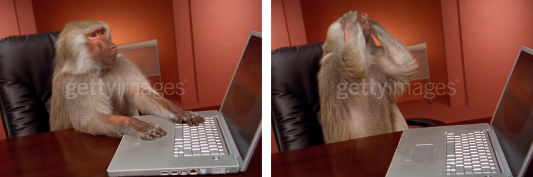

<section id="blog-list">
    <div class="page-header">
        <h1>Blog</h1>
        <div class="hashtag-container">
            <div class="hashtag" draggable="true">
                <span>#thoughts</span
                ><span class="material-icons close-icon">close</span>
            </div>
            <div class="hashtag" draggable="true">
                <span>#learnings</span
                ><span class="material-icons close-icon">close</span>
            </div>
            <div class="hashtag" draggable="true">
                <span>#technology</span
                ><span class="material-icons close-icon">close</span>
            </div>
            <div class="hashtag" draggable="true">
                <span>#design</span
                ><span class="material-icons close-icon">close</span>
            </div>
            <div class="hashtag" draggable="true">
                <span>#life</span
                ><span class="material-icons close-icon">close</span>
            </div>
        </div>
    </div>
    <div id="blog-posts-container">
        <ul>
            {% for post in site.posts %}
            <li>
                <h2><a href="{{ post.url }}">{{ post.title }}</a></h2>
                <p>{{ post.excerpt }}</p>
                <p>{{ post.date | date_to_string }}</p>
            </li>
            {% endfor %}
        </ul>
    </div>
</section>
